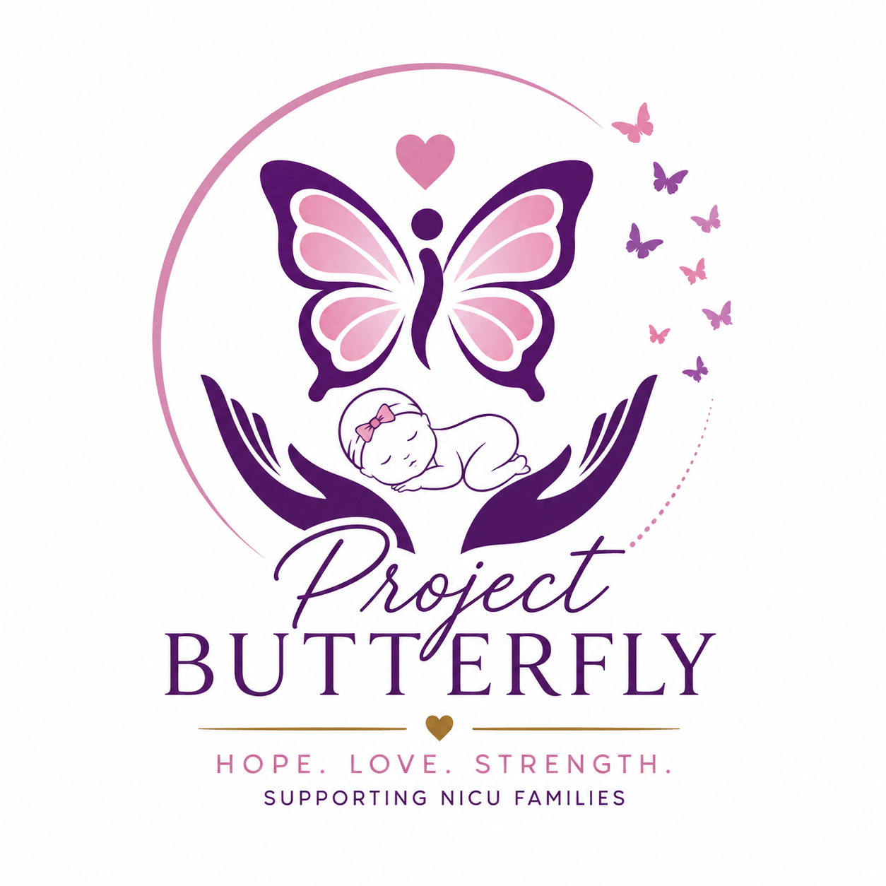

Every Tiny Butterfly Deserves a Chance to Soar 🦋
Supporting NICU families with hope, education, encouragement, and love—one tiny fighter at a time.

A safe space for NICU families to find support, encouragement, resources and hope.
Supporting NICU families with hope, education, encouragement, and love—one tiny fighter at a time.
Every tiny butterfly has a story. Project Butterfly is created to support parents through the NICU journey with information, encouragement and hope.
To remind NICU families that they are not alone. Together, we celebrate strength, courage and every milestone.
Welcome to Project Butterfly. This journey was created from a place of love, hope and compassion for families who experience the NICU journey. Every tiny baby has a powerful story, and every parent deserves support, encouragement and a reminder that they are not alone. Together, we celebrate every little victory, every milestone, and every beautiful butterfly that grows stronger each day.
With love,
Ernestina 🦋
Project Butterfly is a safe and supportive space created for NICU families and parents of premature babies. We provide encouragement, resources and hope for families navigating the emotional journey of having a little one who needs extra care. Our goal is to celebrate every milestone, share knowledge and remind parents that even the smallest butterflies can grow strong and soar.
The NICU journey can feel overwhelming, but no parent has to walk it alone. Our welcome guide provides gentle support, helpful information and encouragement for families learning how to care for their tiny fighters.
Topics include:
🌸 Understanding the NICU journey
🍼 Feeding and growth milestones
💛 Supporting parents emotionally
🦋 Celebrating every little victory
Every NICU parent needs support, information and encouragement. Our resources are designed to help families understand their journey, celebrate progress and feel confident caring for their little butterflies.
🌸 NICU journey tips
🍼 Feeding and nutrition guidance
👣 Baby milestone tracking
💛 Parent encouragement and support
No family should feel alone during the NICU journey. Project Butterfly is a growing community of parents, caregivers and supporters sharing hope, encouragement and experiences.
📩 Connect with us
💛 Share your story
🦋 Celebrate every milestone
Project Butterfly is dedicated to supporting NICU families, sharing knowledge, and celebrating the strength of premature babies and the parents who stand beside them.
Helping parents navigate the NICU journey with hope and encouragement.
Providing trusted information, guides, and practical tips for families.
Connecting families so they can encourage and learn from one another.
Every small step is worth celebrating because every tiny victory matters.
Families we hope to support
Educational resources to create
Mission: Every family matters
🌸 Hope for families
🍼 Support for tiny fighters
💛 Celebrating every milestone
🦋 Building a caring community
Project Butterfly began with one family's NICU journey and a dream that no parent should ever feel alone.
"Every journey begins with one tiny step. Celebrate every milestone, no matter how small."
— Project Butterfly